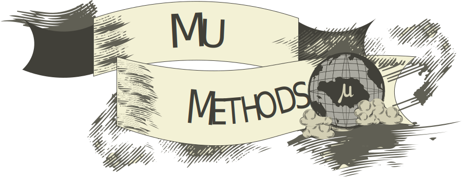

Frankie (Founder, CTO) began working in software development in 2016 as MetaMask’s #3 hire. She stayed on the team for four years as a core dev, seeing the company through its inception, the ICO boom and bust, crypto kitties onslaught, and eventual dominance of the Ethereum wallet ecosystem. Her primary responsibility was to manage the code focusing on network connectivity, transaction construction and sending. She maintained a heavy security mindset while assisting the founder, Kumavis, in his research.
During her tenure, Frankie realized that key management was the solution to login complexity and personal identity verification. Through her journey of p2p protocols she gained a deep understanding of the underlying technologies required to construct and execute the next step to self-sovereign identity.